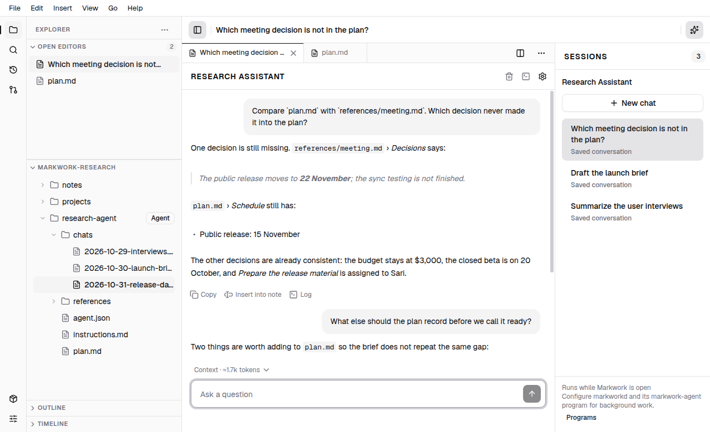
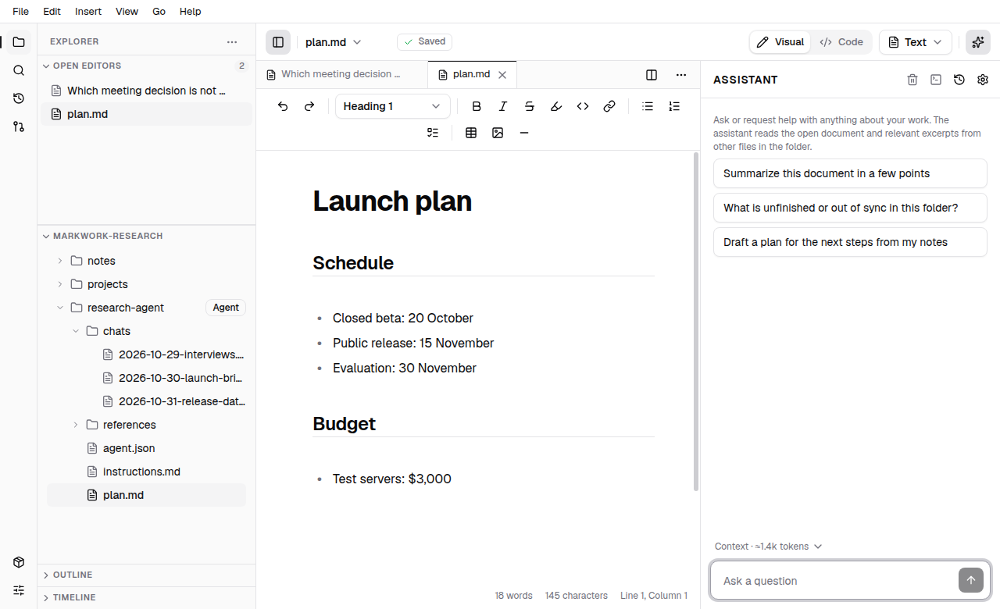

Agent
Agent folders
A folder can define its own agent: instructions in Markdown, documents that stay editable, and independent conversations that sit beside the documents in the same tab strip.
Every other folder in Markwork has one Assistant panel that follows the open document. An agent folder works the other way around: the agent belongs to the folder, keeps several conversations, and its chat opens as a tab next to your notes. This page covers the marker file, the layout of the page, sessions, the approval boundary, and the background runtime.
A folder that defines an agent
An exact agent.json file at the root of a folder marks it as an agent. The file is ordinary JSON, next to the notes you already keep there:
{
"version": 1,
"name": "Research Assistant",
"description": "Compare research notes and prepare a launch brief with sources.",
"instructions": "instructions.md"
}version, name, and instructions are required; description is optional. Instructions are a normal Markdown file inside the folder, so they open in the editor with Visual and Code modes, autosave, and undo like any other document. A folder without the marker keeps the existing behavior and the ordinary Assistant.
A marker that cannot be read is shown as a configuration error, with the file still editable, instead of silently starting a request. Paths are resolved inside the agent folder: an absolute path, a .. segment, or a path into the conversation storage is rejected.
The Agent page
Opening an agent folder selects its newest conversation. The Explorer stays on the left, the conversation opens centrally, and the right panel lists the sessions of this folder. Selecting an agent folder inside a larger workspace keeps the ordinary sibling folders visible; only the agent's own folder becomes its context.

Chat tabs and Markdown tabs live in the same strip. A document opens with the normal editor, its save state, undo history, and dirty indicator; closing a chat tab does not delete its session or stop work that is running.
Conversation text and the composer share a centered column capped at 768 pixels, with responsive gutters on smaller windows. Long history scrolls inside the conversation, while the window header, the tabs, and the composer stay in view, including in split panes. Reading earlier messages keeps your scroll position when new output arrives; sending a new question follows the latest output.
The right panel follows the focused tab: a chat shows Sessions, and a document or any other layout shows the ordinary Assistant. That way a note keeps the Assistant you already know, and a conversation always has its own list.

Instructions and scope
The referenced Markdown file supplies the role instructions. They are counted in the context budget like any other part of it, and a change to the file takes effect on the next turn; a turn that is already running keeps the revision it started with. Editing the instructions never changes what the agent is allowed to do.
The context is the agent folder: its Markdown files and any file you attach explicitly. Inspecting a document in another tab does not quietly add it to the next question. Ordinary sibling folders, and the conversations in chats/, are outside the agent's search and proposals.
Sessions and history
One folder defines one agent with many independent sessions. Each conversation keeps its own transcript, work plan, proposals, and recovery state; a new chat starts from the instructions and the folder, never from another session's history.
Sessions are saved as Markdown in the visible chats/ folder of the agent, and the file carries layout: chat in its frontmatter, including an empty session. The directory is created when the first session is saved and is ignored by Git by default through its own chats/.gitignore; delete that file if you want to track conversations. The ordinary Assistant keeps its history in .markwork/chats as before.
- New chat opens another session in a new tab; the previous one keeps running if it was running.
- Selecting a session row focuses its tab, or reopens it when the tab was closed, without duplicating it.
- Stop is an explicit action of a session. Switching tabs or closing a chat never stops a turn.
- A turn that is already running holds the folder's turn slot; further requests wait in a queue instead of running twice at once.
- Selecting a
layout: chattranscript in Explorer opens the matching chat. Opening it never sends a message, and an unsaved transcript draft stays in the editor until you save and reopen it.
Review and approval
The approval boundary does not change in an agent folder. The agent reads freely and proposes a change; the review window shows the diff with the reason, and the files change only after you press Apply (a batch may be applied partially). An applied proposal can be undone through the same checks, and a proposal that no longer matches the current file is refused instead of overwriting your edits. See Proposals and approval.
Closing the window, losing the connection, or replaying a conversation never grants approval. A proposal waits for you.
Background work
Without a background runtime the chat runs while Markwork is open, and the session panel says so. On Linux, a compatible markworkd with the markwork-agent program, an allowed folder, and a credential the worker can reach lets a started turn continue after the window closes; pending proposals still wait for Apply. Credentials kept only in the application's private vault are not available to the worker. The setup and its current limits are in the Limitations page and markworkd/README.md in the repository.
Creating an agent folder
Choose File → New Agent… (or New Agent… from the command palette, or right-click a folder in Explorer). The dialog asks for a name and creates the folder with an agent.json, an instructions.md you can edit, and a chats/ folder that appears only once a session is saved. The new agent opens directly, so you can write the instructions and start the first conversation.
Any folder that already contains a valid agent.json is an agent: copying that file into a folder of notes is enough to make the folder its own agent, without a .markwork directory.
Example workspace
The repository's example/ folder mixes ordinary notes/ and projects/ folders with a research-agent/. Run npm start -- example and select research-agent in Explorer, or open example/research-agent directly. It ships without a conversation, so the first chat is yours.